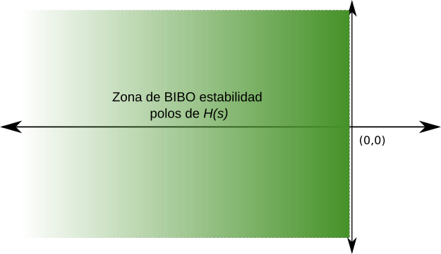
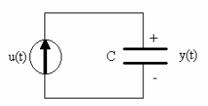

Estabilidad#
El concepto de estabilidad está relacionado con la respuesta a un estímulo apropiado del sistema a analizar. Estudiaremos aquí el caso de sistemas lineales e invariantes en el tiempo.
Estabilidad con entrada y salida acotada (BIBO ESTABILIDAD)#
Definición de BIBO estabilidad#
Se dice que un sistema tiene estabilidad de entrada y salida acotada si toda entrada acotada da lugar a una salida acotada.
Primeras nociones de BIBO estabilidad para sistemas lineales e invariantes en el tiempo#
Estabilidad y localización de los polos con la función transferencia de la forma:
Buscamos condiciones sobre la localización de los polos de \(H(s)\) en el plano complejo que aseguren la BIBO estabilidad del sistema.
Si imponemos la condición de BIBO estabilidad debe ser: \(m\leq n\) función transferencia propia ya que si no fuera el caso, efectuando el cociente de polinomios \(\frac{N(s)}{D(s)}\), tendríamos:
por lo que si le aplicamos un escalón por ejemplo
la correspondiente respuesta tendrá un término \(c_1\), que corresponde a \(c_1 \delta(t)\) en el dominio temporal que no es acotada.
Asumimos entonces que \(H(s)\) es propia y la expresamos como:
donde por simplicidad hemos supuesto que los polos son reales y simples. La respuesta a un escalón unitario \(U(s) = \dfrac{1}{s}\) será:
Expandiendo por fracciones simples se obtiene:
donde
y
Tomando la Transformada Inversa de Laplace se obtiene:
Vemos que para que la salida permanezca acotada los polos \(p_l\) deberán ser negativos.
Si consideramos ahora la posibilidad de tener polos complejos, los mismos deberán aparecer como pares polos complejos conjugados, por lo que la respuesta a un escalón unitario será de la forma:
Donde hemos supuesto que hay «r» polos reales simples y q pares de polos complejos conjugados \(()\sigma_l+j\omega_l\).
En este caso vemos que la condición que la salida sea permanezca acotada debe ser:
\(p_l \leq 0\) polos reales negativos
\(\sigma_l \leq 0\) polos complejos conjugados con parte real negativa.
Un razonamiento similar se puede hacer para el caso de tener polos reales y/o complejos con multiplicidad.
Conclusión#
Una condición necesaria y suficiente para la BIBO estabilidad es que los polos estén ubicados en el semiplano izquierdo abierto (polos con parte real negativa)
{kind=link}

Zona de estabilidad de en el plano \(s\)#
Formalizando matemáticamente BIBO estabilidad#
Observemos que esta definición es independiente de lo que ocurra dentro del sistema: una variable interna del sistema puede crecer ilimitadamente según esta definición.
Comprobar esta propiedad es fácil utilizando la propiedad de convolución:
Llamando \(u(t)\) a la entrada, \(y(t)\) la salida y \(h(t)\) la respuesta a un impulso, tenemos que la salida es:
Si \(u(t)\) es acotada, entonces existe \(M\) tal que \(|u|\le M < \infty\) y entonces la salida está acotada por:
Por lo tanto, la salida \(y(t)\) estará acotada si la integral
es acotada.
Por otro lado, supongamos que esta integral es no acotada, y consideramos la entrada acotada \(u(t-\tau)\) = +1, si \(h(t) > 0\), y \(u(t-\tau) = -1\), si \(h(t) < 0\). En este caso:
y por lo tanto la salida es no acotada. O sea que si la integral es no acotada, el sistema no es estable.
Condición para BIBO estabilidad#
El sistema con respuesta al impulso \(h(t)\) es estable con entrada y salida acotada si, y solo si, la integral
es acotada.
Corolario#
Un sistema LTI es BIBO estable si y solo si su función transferencia tiene todos los polos del lazo izquierdo del plano \(s\), sin incluir el eje.
Ejemplo de aplicación de las condiciones de BIBO estabilidad#
{kind=link}

Circuito R-C#
Analicemos la estabilidad del circuito eléctrico que muestra la figura anterior.
Para este sistema eléctrico tenemos que el capacitor hace de un integrador puro, y por lo tanto la respuesta al impulso será el escalón unitario (si C = 1).
Por lo tanto la integral será:
y esta integral es no acotada, por lo tanto según esta definición de estabilidad, este sistema no es estable.
Notar que la función de transferencia de este sistema tiene un polo en el origen (en el eje imaginario): \(G(s) = \frac{1}{s}\).
Si un sistema invariante en el tiempo tiene cualquier polo en el eje imaginario o en el semiplano derecho, la respuesta no será acotada y para cualquier entrada acotada.
Condición de estabilidad
Si todos los polos están dentro del semiplano izquierdo sin incluir el eje imaginario, entonces la respuesta será estable con entrada y salida acotadas. Por lo tanto, para sistemas invariantes en el tiempo (estacionarios), podemos utilizar la ubicación de los polos de la función de transferencia del sistema para verificar su estabilidad.